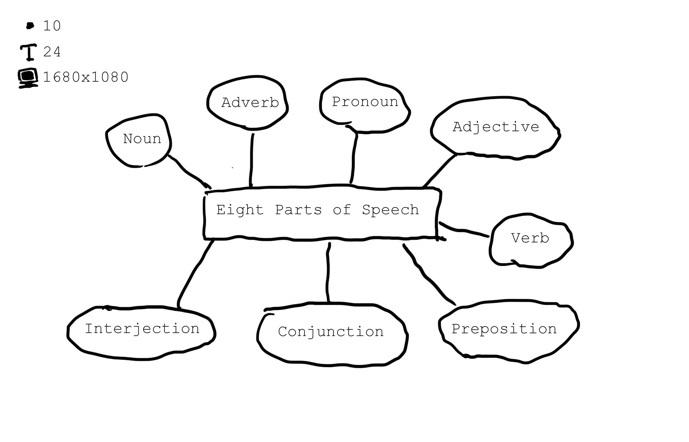

Home
archives
Works
AAA
BBB
Categories
Grammar
(2)
Tags
Speech
(1)
centence
(1)
Links
Kieran
Name
About
RSS
Learning English
More
Toggle navigation
2016-08-30
|
Speech
>
Grammar
八大詞類
總覽

說明
Noun
前面要有 the, a, an
其他詞類加 suffix (act -> action) 可形成名詞
Pronoun
人稱代名詞
單複數、陰陽性及無性
主格、受格、所有格
關係代名詞(relative pronouns)
連接主要子句以及從屬子句
Adjective
修飾名詞或代名詞
小心(careful)
數量(many)及代名形容詞(this)
Verb
表示動作行為或狀態
時態
現在式
過去式
過去分詞
現在分詞
Adverb
修飾動詞、形容詞、副詞、子句
表示時間(now)、地點(here)、狀態(happily)
關係副詞(Relative adverbs)(when)
具有連接詞與副詞特性
Preposition
放在名詞或代名詞前(a gift for you)
後面不接 that 引導的子句或不定詞
Conjuntion
連接字、片語、子句、句子
對等連接詞(and, but)、從屬連接詞(after, if)、連接性副詞(therefore, however)
Interjection
表示情緒
Damn, Oh
← 句型
1.
總覽
2.
說明
2.1.
Noun
2.2.
Pronoun
2.3.
Adjective
2.4.
Verb
2.5.
Adverb
2.6.
Preposition
2.7.
Conjuntion
2.8.
Interjection